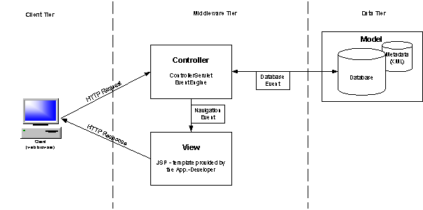

News
[21-May-2002]  Updated version 1.1.2
Updated version 1.1.2
[03-May-2002] Updated version 1.1.1
[19-Apr-2002] Version 1.1
[19-Apr-2002] Version 1.1 - User Manual
[05-Apr-2002] Updated version 1.07
[05-Apr-2002] Version 1.01 - User Manual
[22-Mar-2002] Updated version 1.06
[22-Feb-2002] Version 1.0 - User Manual
[22-Feb-2002] Updated version 1.05
[08-Feb-2002] Updated version 1.04
[01-Feb-2002] Updated version 1.03
[23-Jan-2002] Updated version 1.02
[18-Jan-2002] Updated version 1.01
[15-Jan-2002] Version 1.0
Overview
DbForms enables developers to build sophisticated web-based database driven applications in very short time
and with very little efforts. DbForms - applications are built in a manner conceptually similar to RAD -
database building tools such as Microsoft Access (for Windows-based applications) or Sybase PowerSite
(for web-based applications).
Rapid Application Development (RAD) tools in general, allow a user to place database components and
action elements on templates which then get executed at runtime. As you will soon discover, dbForms
uses these same techniques for its own framework.
An important benefit of using DbForms is its openness to other systems. You may use DbForms in conjunction
with common JSP-pages, Struts-based pages, etc. This means that you are free to use DbForms where it brings
you the most benefits (dramatically reduce development efforts, etc.) and to use other techniques if you
think that they offer a better solution.
Architecture
DbForms implements the concepts of the Model - View - Controller design pattern
and leads to typical 3-tiered web-applications.

Technical background
DbForms is based on the following specifications: "Java Servlets 2.2" and "Java Server Pages 1.1" by Sun
Microsystems. For more information on server-side Java technology please see [servlet]
DbForms makes extensively use of the "JSP Tag Library Extension" included in the JSP 1.1 specification.
[tags]
XML parsing facilities and other parts of DbForms are based on code taken from Apache Group's
Jakarta-Struts project. [Struts]
Contact
any questions or comments? Please send an E-Mail to the mailing list!